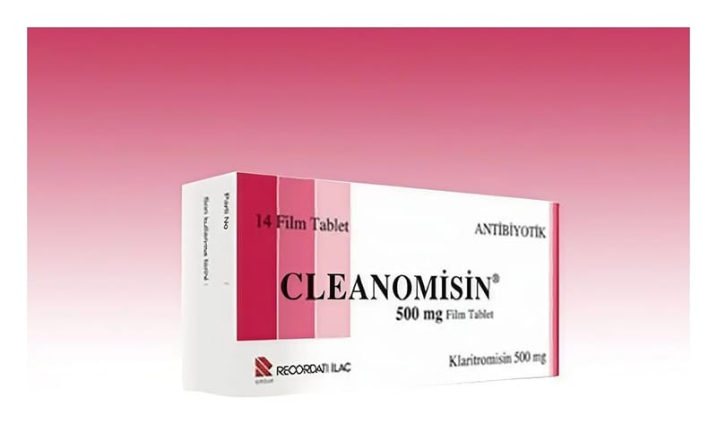

Cleanomisin 500 mg Film Kaplı Tablet, 14 Adet

Ne için kullanılır
KT · Bölüm 1CLEANOMİSİN film kaplı tabletler, sarı renkli, oblong, çentikli tabletlerdir. Tabletler eşit yarımlara bölünebilir. Bir kutuda 14 tablet bulunan ambalaj şeklinde satışa sunulmuştur.
Her bir CLEANOMİSİN film kaplı tablet, 500 mg klaritromisin içerir.
CLEANOMİSİN film kaplı tablet (klaritromisin) makrolid adı verilen bir gruba ait bir antibiyotiktir. Antibiyotikler enfeksiyonlara neden olan bakterilerin çoğalmasını durdurur.
CLEANOMİSİN film kaplı tablet yetişkinlerde ve 12 yaşından büyük çocuklarda çeşitli mikroorganizmaların neden olduğu şu enfeksiyon hastalıklarının tedavisinde kullanılmak içindir: • Farenjit (yutak iltihabı), tonsillit (bademcik iltihabı), sinüzit (sinus iltihabı) gibi üst solunum yolu enfeksiyonları, • Akut ve kronik bronşit, pnömoni (zatürre) gibi alt solunum yolu enfeksiyonları, • Duyarlı mikroorganizmaların neden olduğu komplike olmayan, çeşitli deri ve yumuşak doku enfeksiyonları,
CLEANOMİSİN film kaplı tablet ayrıca aşağıdaki tablolarda da kullanılmaktadır: • Bazı AIDS (edinilmiş immün yetmezlik sendromu) hastalarındaki, bir mikobakteri türüne (mikobakterium avium kompleksi) bağlı enfeksiyondan korunma amacıyla, • On iki parmak barsağı ülseri nüksünün azaltılması için, H. p ylori adındaki bakterinin yok edilmesi (eradikasyonu) amacıyla.